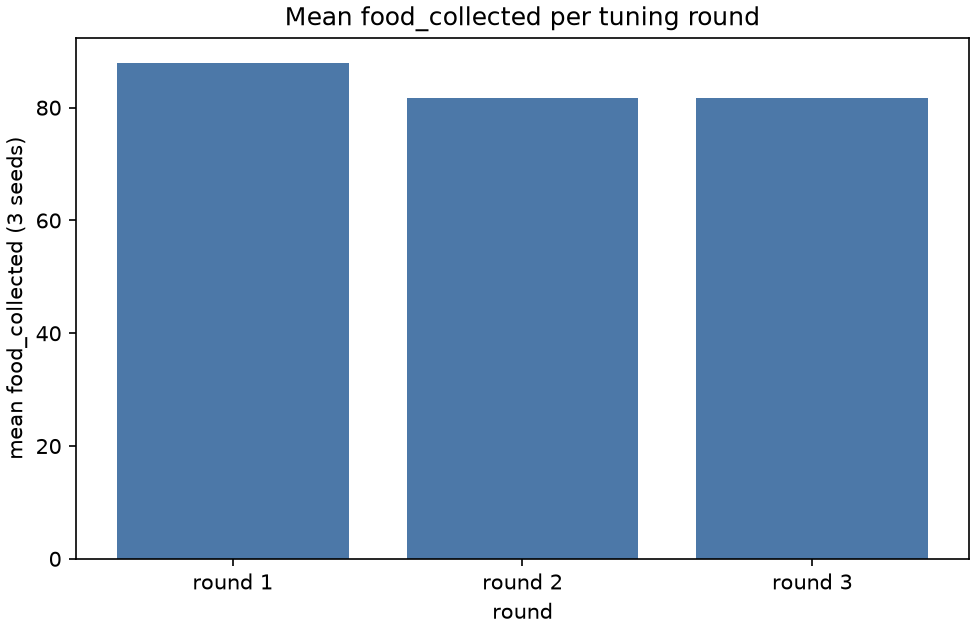

Stage report, step 7 of 8. Back to summary
| What | Up to 3 rounds on seeds 101 to 103. Pick the round with the highest mean food_collected. |
|---|---|
| Why | The pheromone values freeze before the keep-A judgement and before any detractor run. |
| Input data | Real runs, d = 0, defense off, seeds 101 to 103 (runs/tuning/). |
| Output data | results/real/tuning/tuning_pick.json. |
| Result (numbers) | picked round 1: half_life_s 60, lambda_dep 0.077. |
| Result (good or bad) | Bad: no round beat round 1 (D-007 failure condition). |
| Status | ran |
Figure and table

| round | half-life (s) | lambda_dep | food by seed | mean food |
|---|---|---|---|---|
| 1 | 60 | 0.077 | 101: 86, 102: 98, 103: 80 | 88.00 |
| 2 | 120 | 0.077 | 101: 75, 102: 95, 103: 75 | 81.67 |
| 3 | 60 | 0.05 | 101: 80, 102: 87, 103: 78 | 81.67 |